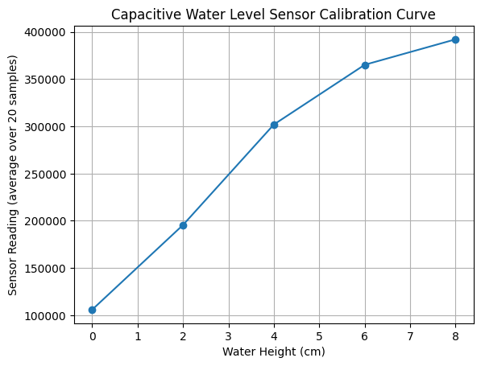
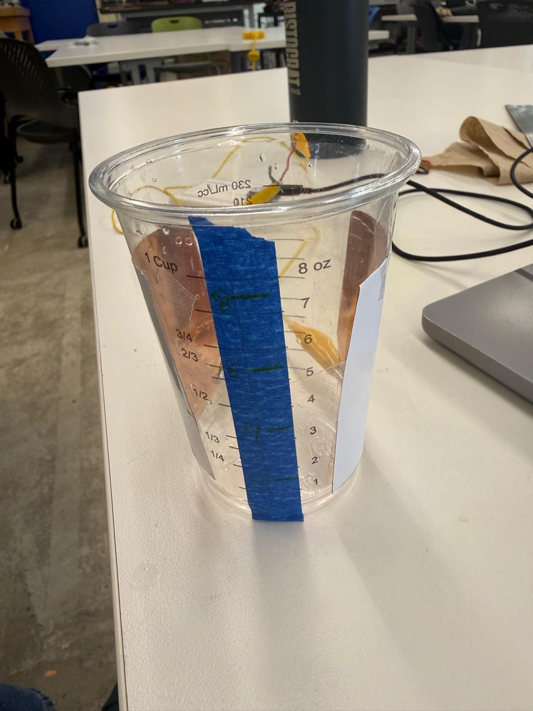
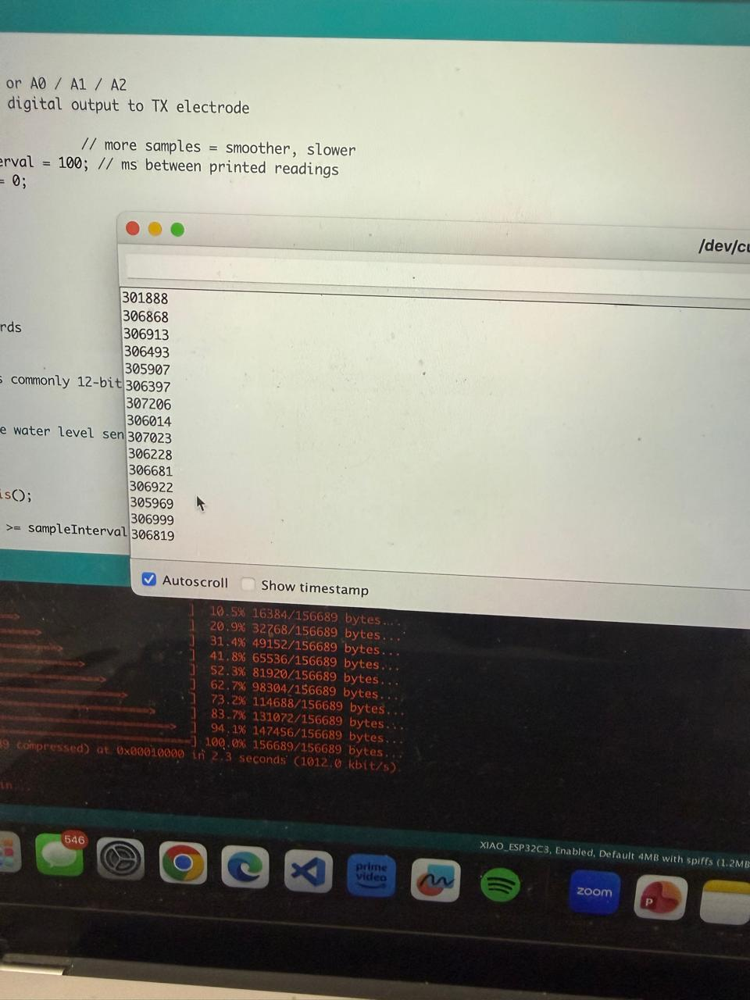
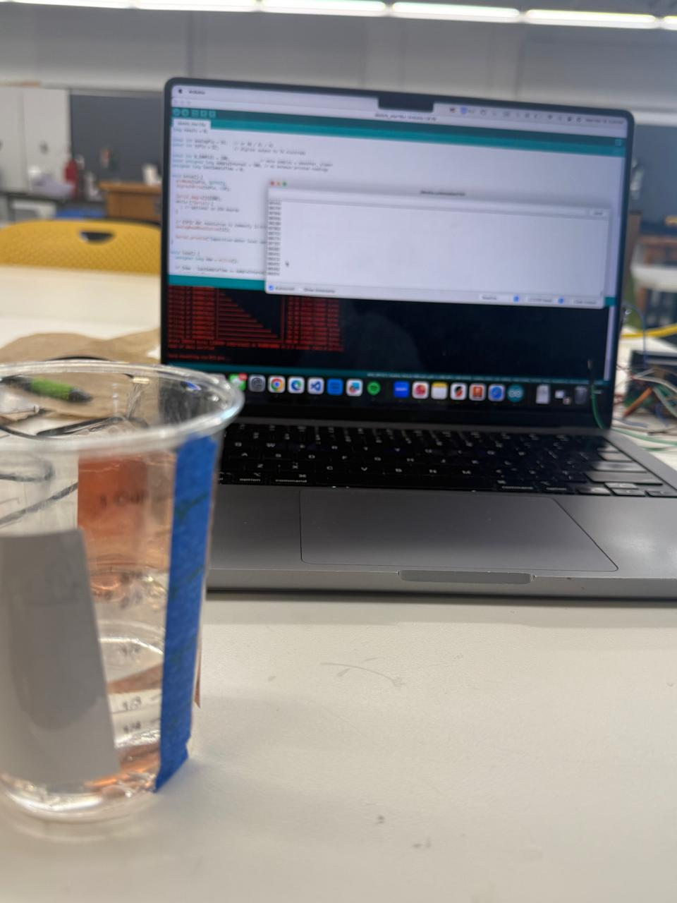
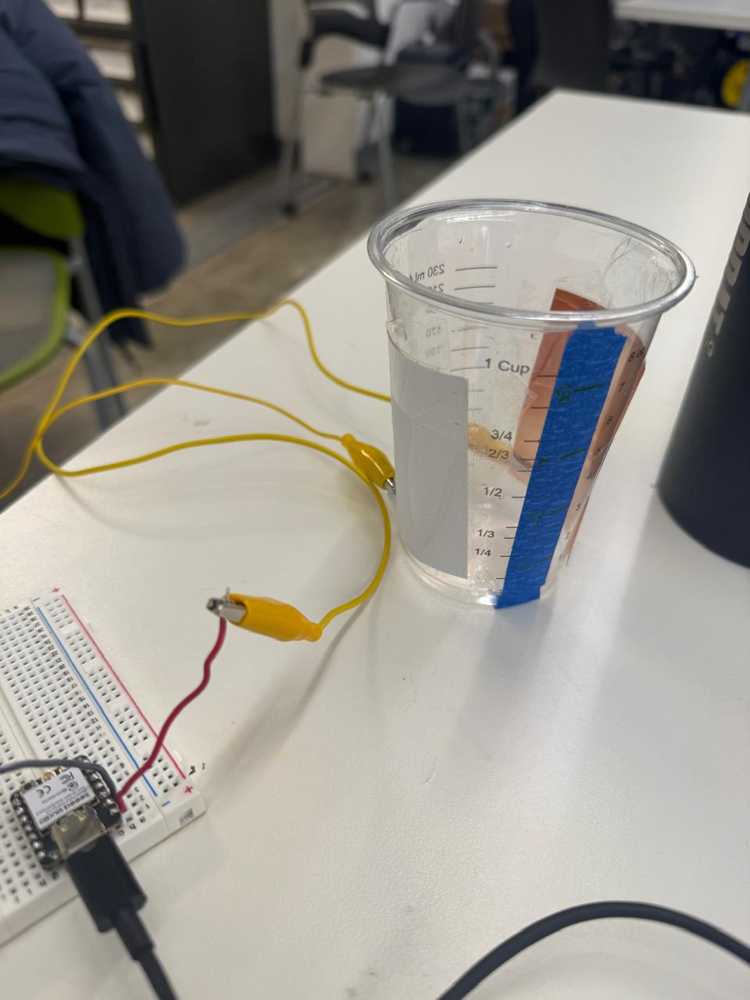

Project 06
I built a water level Capacitative sensor that measures the amount of water in a container. The curve is not linear, the sensor becomes more sensitive as the water height increases. This aligns with non linear capacitance behavior. I was also wondering if increasing distance between the 2 strips with increasing height had any influence on this.
sensorreadings.csv




Sorry completely forgot to record this but I was able to use the black pressure strip to use as a sensor to turn on LEDs.